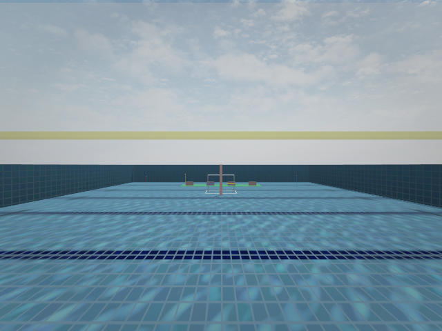
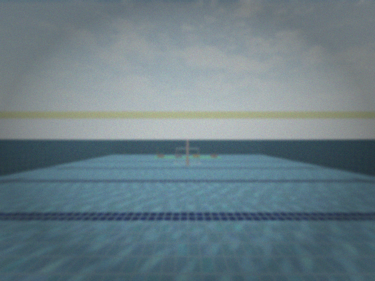
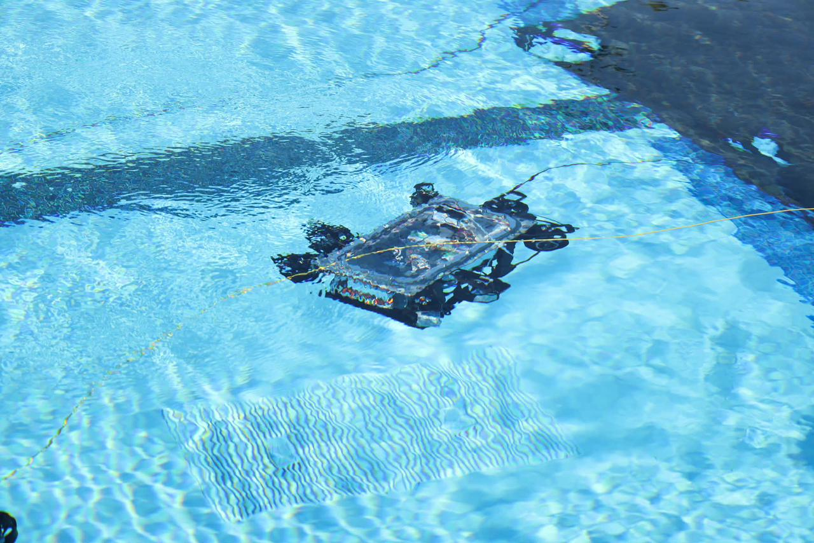
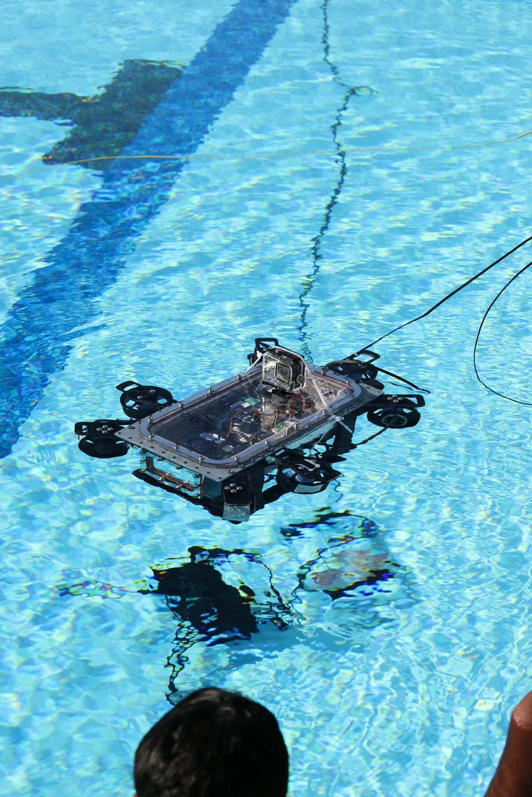
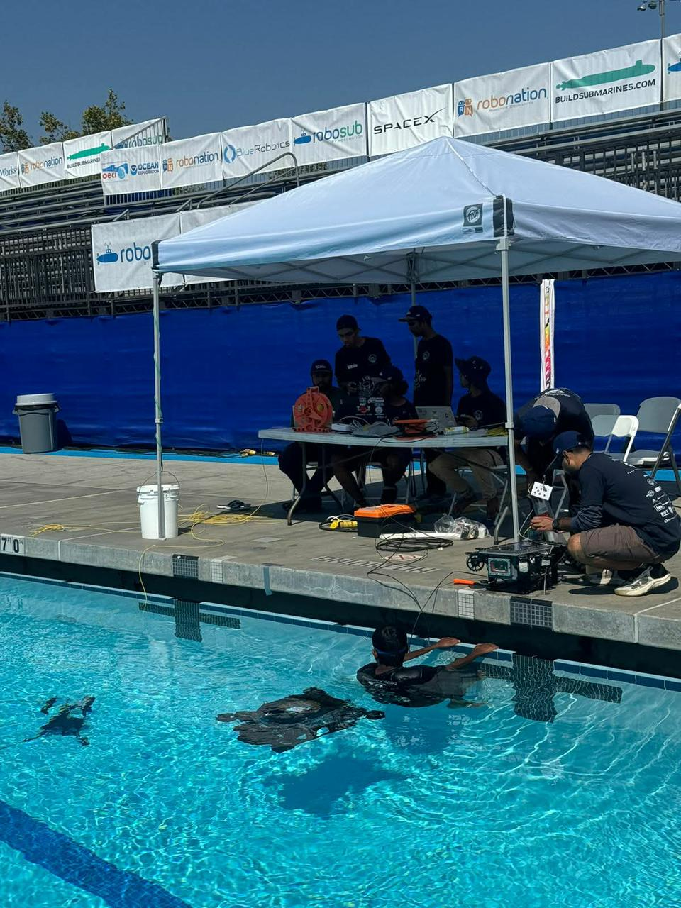
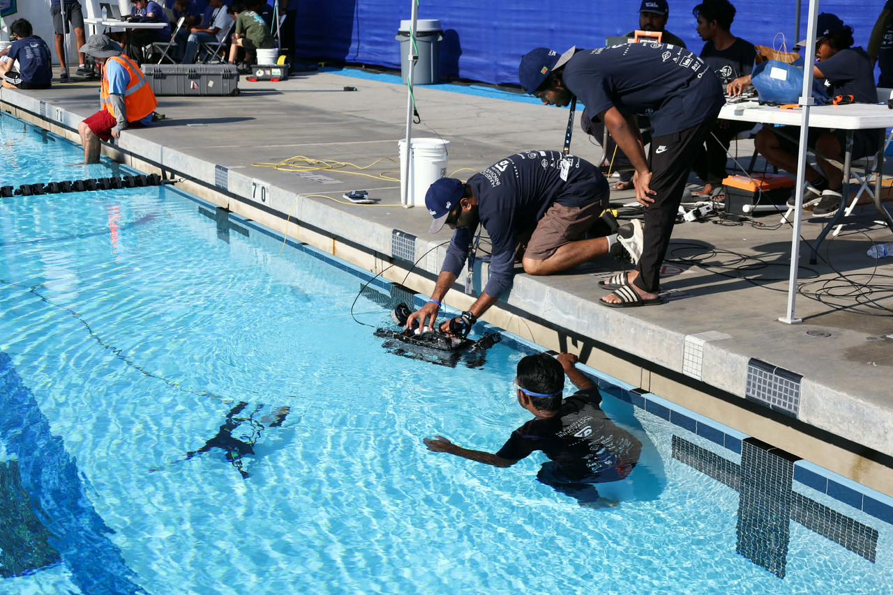
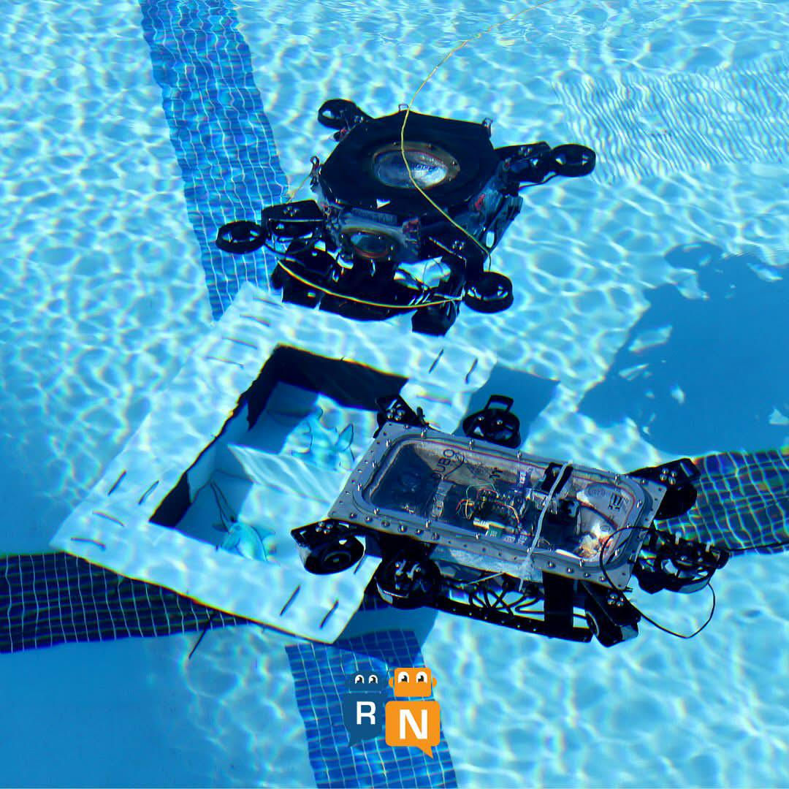
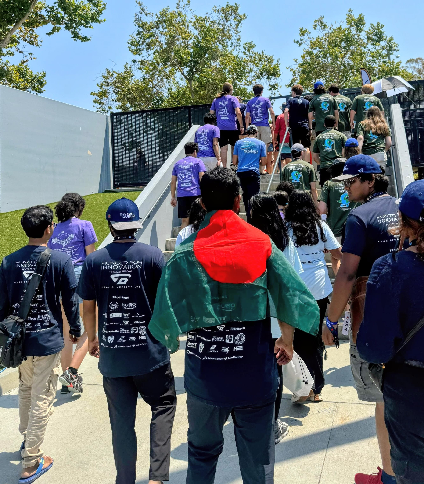
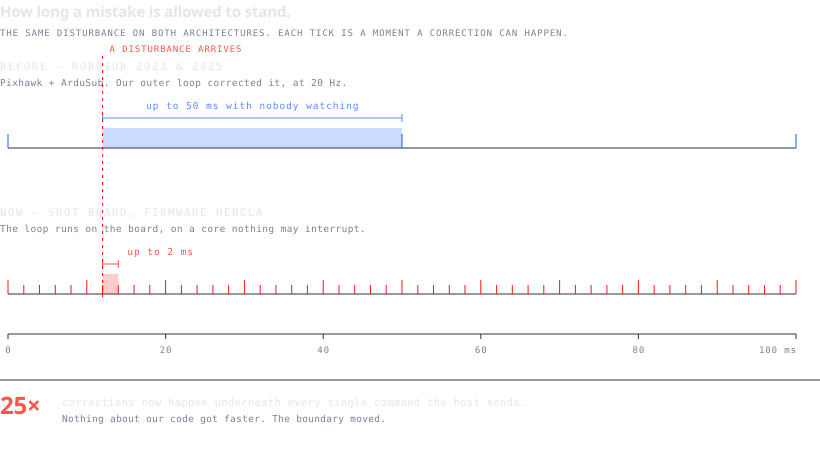

Mongla // an autonomy stack for autonomous underwater vehicles
Machines that have to work when nobody is watching.
Underwater there is no radio, no GPS, and no second chance to explain yourself. A vehicle either understood what it was looking at, or it did not — and it will not tell you which. This is the software that has to be right anyway.
Nothing on this platform has been in water. Every number above says where it was taken.
Everything down here fights you.
Not as a metaphor. Each line is a force acting on a decision the software has to make, and each one is why some ordinary technique does not survive contact with the medium.
| the medium does this | so this breaks | what we measured |
|---|---|---|
| Absorbs red first, then everything | Colour thresholds, contrast tricks | 17 preprocessing configs, never once positive |
| Bends light at the port glass | Any angle taken from a datasheet | 63.8° in air → 46.7° in water |
| Blocks radio entirely | Telemetry, GPS, remote intervention | no link below the surface |
| Carries 800× the mass of air | Any controller tuned for a drone | added mass 1.0× displacement broadside |
| Moves while you are deciding | Position held by dead reckoning | 0.12 m/s current → 1.374 m of drift in 40 s |
| Hides the thing you were tracking | Detectors that assume continuity | 71 real detection gaps, catalogued |




Act one // where it learned
It learned most of what it knows from losing to water.
Mongla began as the autonomy software for a university AUV programme. It flew on that programme's vehicles. The vehicles, the team and the name stayed there; the software, and everything it had been taught, came here.
RoboSub — 2nd place
A Pixhawk, ArduSub, a Jetson, and an inner control loop we could tune but never open.
The vision years
Detection, tracking, and the slow discovery that most published underwater-vision advice does not survive being measured on your own footage.
RoboSub — 8th place
The last campaign on the old stack. It worked, and it had a ceiling: our control ran at 20 Hz, steering a box we were not allowed inside.
The stack leaves the lab
In September the author left the university, on principle. Mongla continues independently, with the firmware and hardware lead as its only co-author.




Act two // opening the box
We stopped renting the inner loop.
The old stack asked a closed autopilot to hold an attitude, at whatever rate our companion computer could manage. The ceiling was not our code — it was the boundary. So the boundary moved: reflexes went onto a board we write the firmware for, and the companion was left to do nothing but think.

| layer | what it owns | rate | state |
|---|---|---|---|
| SROT board — firmware Hengla | IMU, depth, leak, kill, thrust mixing | 500 Hz | bench |
| Raspberry Pi 5 + Hailo-8 | Detection, tracking, optical-flow velocity | 53.9 Hz | bench |
| Host control | Verbs, vision loops, mission logic | 20–50 Hz | bench |
| Estimation | Right-invariant EKF, late measurements replayed in order | — | software |
| Anything at all, in water | — | — | blocked |
The body // 702 mm, five thrusters, one uncontrolled axis
A red machine, lit by the water it has to survive.
Drag it. Every number below was taken from the CAD geometry itself — 84,248 triangles at 0.9 mm tessellation, measured rather than quoted.


Every one of these is rendered at 2800 px from the same 84,541-triangle mesh the interactive model uses, with each part carrying its own material colour straight out of the CAD. Nothing here is a photograph, and nothing here is an artist's impression.

What the geometry says
| measurement | value | why it matters |
|---|---|---|
| Length overall | 702.0 mm | One person can carry and launch it |
| Beam × height | 176.1 × 172.1 mm | Near-square section — form alone gives no preferred roll orientation |
| Fineness ratio | 3.99 | Just under the 4.5–6 band of minimum-drag bodies of revolution: slightly stubby, deliberately compact |
| Frontal area | 160.9 cm² | The water that has to be pushed aside |
| Wetted area | 1.107 m² | Where skin friction is paid |
| Lateral tunnels | 2 × ⌀84 mm at ±175 mm | Sway, and yaw on a 175 mm arm |
| Vertical tunnels | 2 × ⌀84 mm at ±259.5 mm | Heave, and pitch on a 259.5 mm arm |
| Axial thruster | 1, in the nose | Surge |
| Bilateral symmetry | ±88.05 mm, exact | No built-in turn bias to trim out |
Where the design is strong
Four tunnels and one axial unit buy five of six degrees of freedom — surge, sway, heave, pitch, yaw — with no vectoring linkage, no moving nozzles and nothing protruding into the flow. Tunnels also deliver full authority at zero forward speed, which is precisely the regime a task is won in: holding still in front of a hole. Bilateral symmetry is exact to ±88.05 mm, so there is no built-in turn to trim away. And the pitch couple is 48 % wider than the yaw couple (519 mm against 350 mm), which puts the stronger moment on the axis that has to resist a nose-down trim.
Where it costs
The four bores total 221.7 cm² of open aperture on a hull whose frontal area is 160.9 cm² — the holes come to 1.38× the frontal area. Open tunnels are cavities in cruise: they are the price of station-keeping authority, and it is paid continuously while transiting. At a fineness of 3.99 the body is already blunter than the drag optimum, so the two choices compound. The couples are also arguably the wrong way round — yaw is the axis an AUV actually uses, to hold heading against current and to line up on a target, and yaw got the narrower 350 mm couple. Swapping the tunnel pairs would favour the axis doing the work. And with every thruster on the centreplane, roll has no actuator at all: it has to be passively stable, which promotes the vertical placement of ballast from a detail to a load-bearing decision.
What this drawing cannot tell you
All of the above is geometry, and geometry is half a hull. These are unmeasured, and will not be guessed at here:
- Net buoyancy — whether it floats at allneeds material densities
- Centre of buoyancy above centre of mass — the whole roll argumentneeds a mass model
- Drag coefficient, and so the power to cruiseneeds a tow test or CFD
- Thrust per tunnel, and so whether five are enoughneeds a bollard test
- Whether the modelled motors are the ones fitted3 of 5 populated in CAD
A shell mesh cannot answer the buoyancy question, and it would be easy to pretend otherwise: the enclosed volume of this model is 1.77 L, which is the surface and not the displacement. Using it would repeat a mistake this project has already made once, and written down. The geometry here is read straight out of the CAD by pack_hull.py, which is also what builds the model above.
Perception // one frame, end to end
Eighteen milliseconds from photon to decision.
Not a block diagram — a time axis, with the measured spans on it, and the board's 500 Hz heartbeat running underneath the whole thing.
Continuity // when the detector blinks
The target does not leave. The detector does.
A neural detector on real underwater footage drops the box constantly — a reflection, a bubble, a bad angle. If control trusts only the detector, the vehicle loses a lock it never actually lost. So there is a ladder, and each rung is allowed to be wrong for a measured length of time.
| rung | holds the lock when | measured |
|---|---|---|
| Live detection | The box is there this frame | 53.9 Hz |
| Tracker coast | A frame or two is missing | 0.8 s of authority, decayed by true age |
| Geometric anchor | The detector is gone entirely | held 175 consecutive frames |
| Refuse | Nothing above is honest any more | returns LOST, never a guess |
The third row is the one worth staring at. Through a gap of 175 frames the detector produced nothing at all, and the vehicle still knew where the target was — because the anchor matches image structure rather than asking the network again. The fourth row matters as much: the ladder ends in a refusal, not in a confident invention. The rungs and their timeouts are described in detection-continuity.md.
Retractions // kept on purpose
The results we had to take back.
More than half of the measurement ledger is retractions. They are kept where anyone can read them, because a project that quietly deletes its wrong answers is a project you cannot check. The full ledger, retractions included, is here.
claimed +42 % → measured −95 % on the gate
Seventeen configurations across four props and three venues. Never once positive. The implementation was correct; the original A/B was confounded. Preprocessing is off, and a test keeps it off.
selectivity 0.78× — it was doing the exact opposite
The shipped filter followed doubtful detections more closely than confident ones. It had been live, and every test passed, because no test compared the two directions.
a pooling artefact, not an effect
One clip contributed 1,299 far-field samples at the lowest jitter and zero near-field ones. The trend was an artefact of how samples were pooled. The feature stays off.
958 of 958 ESC frames read exactly 0 — with nothing plugged in
The check counted messages arriving, and messages arrive whether or not a motor exists. A gate that cannot fail is not a gate.
it has never once run closed
The sign was inverted until it was found, and the sensor was not fitted when it was written. Two armed bench checks now gate every automatic move — including a plain forward command, because on this board every automatic primitive closes the depth loop.
Instruments // every number with where it was taken
If it is not measured, it does not ship.
Each of these lives in a ledger with its method, its conditions and the bar it had to clear — and the tests read that file, so a number cannot drift away from the measurement that produced it without something going red.
The language // how a machine is asked to do something
A mission should read like an instruction, not a state machine.
One action, thirty verbs, two vision primitives. The vision verbs never raise — they return where and how they finished, so a mission branches on reality instead of on an exception.
# hold station on the target, then fire mid-hold — still correcting res = mongla.vision.align( 'hole', lat=0, depth=0, # signed pixel offsets from frame centre fwd=62, fwd_mode='area', # and hold this standoff hold=4.0, fire=[1, 2], # two shots, spaced, each gated on a NEW frame lock_on=True, brake=False, ) if not res.saw_target: # never read x_px before this — NaN < n is silently False return search_pattern(mongla) if res.x_px > 0: # it ended right of centre, so recover right mongla.move_right(duration=0.6)
The comment on the eighth line is the whole philosophy compressed: a result that is absent must never be mistaken for a result that is zero. The full verb table is in command-reference.md; what a vision verb hands back is in vision-results.md.
Act three // open
Nothing here has been in water yet.
The honest list of what stands between this and a vehicle that swims:
- The board's depth loop has never run closedtwo bench checks, then water
- Thruster health cannot tell eight healthy motors from noneone-line firmware merge
- Moves by measured distance are refusedfirmware pull request
- The board cannot yet accept a velocity measurementfirmware pull request
- The competition radio cannot reach through an aluminium hullexternal antenna
- Three of five thrusters are populated in the CADhardware
- No mission has been flown on this platformwater time
None of that is hidden, because a capability map that promotes bench results to flight results is how a team finds out at the venue. The live list is ROADMAP.md — one status file, so it cannot disagree with itself.
I left on principle, and I am building this on hope rather than optimism. Hope is the decision to keep working on the better version of a thing while the current version is still broken. Pushing a technical limit is the most concrete form of that I know: every measurement that came back worse than expected is a small argument that the world is knowable, and that the next version can be better than this one.
The next act is open // the machine is still being built